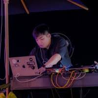
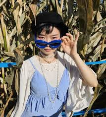

S. Alex Ruthmann
Director
Founder and director of the MusEDLab, leading research and design in creative music technologies and education.
NYU Music Experience Design Lab
The researchers, designers, educators and students behind the lab’s work.
Director
Founder and director of the MusEDLab, leading research and design in creative music technologies and education.

Lab Manager; Visiting PhD student, University of California San Diego
Oversees lab operations and coordinates research and design projects across the MusEDLab team.

Coder in Residence, NYU ITP '21
Specializes in interactive web development, prototyping creative tools for music learning and expression.
Visiting Researcher, Undergraduate Student, University of Michigan
Student Researcher, Shanghai American School
Supported by NYU Steinhardt and MusEDLab.